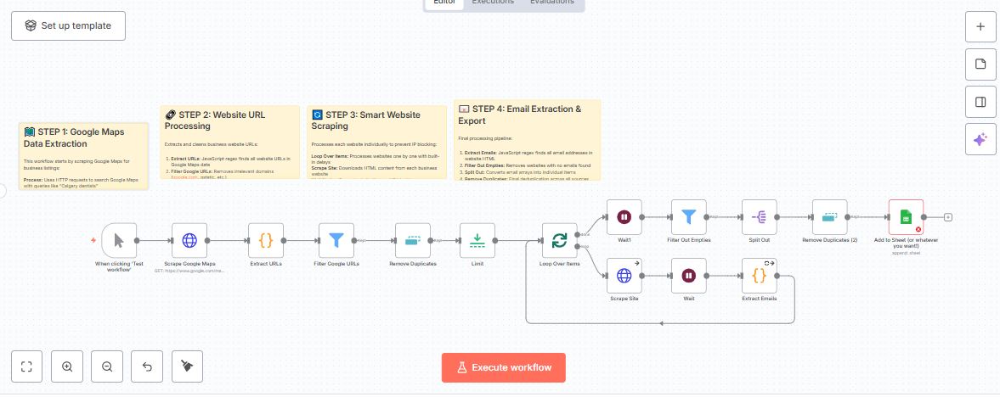

A 7-workflow n8n suite that takes a real estate lead from form-fill to booked call — no manual handoff.
A lead fills a Facebook Ad form or Google Form for a property. In most agencies, that lead sits in a spreadsheet until someone manually reads it, decides how to respond, and follows up — often a day or more later, by which point the lead has already messaged three other agents.
Brokers struggling with slow lead response times who want to capture high-intent buyers instantly and book showings without hiring a 24/7 SDR team.
The moment a form is submitted, a webhook fires. The lead's details are logged, an AI model drafts a personalized first message, and that message goes out over WhatsApp or email within seconds — offering a Calendly link to book a call directly.
